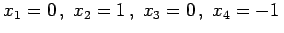
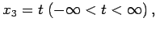
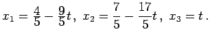

Inhalt Index DeskTop Bronstein

 Lineare Algebra Lineare Gleichungssysteme Lösung linearer Gleichungssysteme Gaußscher Algorithmus
Lineare Algebra Lineare Gleichungssysteme Lösung linearer Gleichungssysteme Gaußscher Algorithmus


Aus der im Ergebnis der GAUSS-Schritte erhaltenen Matrix (4.116) liest man für das zu lösende inhomogene lineare Gleichungssystem ab:
Im Falle der Lösbarkeit werden die Unbekannten sukzessiv, mit der letzten Gleichung beginnend, aus dem gestaffelten Gleichungssystem, das zu (4.116) gehört, bestimmt.
| Beispiel A | ||||||
Die Lösung ist eindeutig, und aus dem zugehörigen gestaffelten linearen Gleichungssystem folgt . |
| Beispiel B | ||||||
Eine Lösung existiert, aber sie ist nicht eindeutig. Man kann eine Unbekannte als freien Parameter wählen, z.B.  und erhält:  |